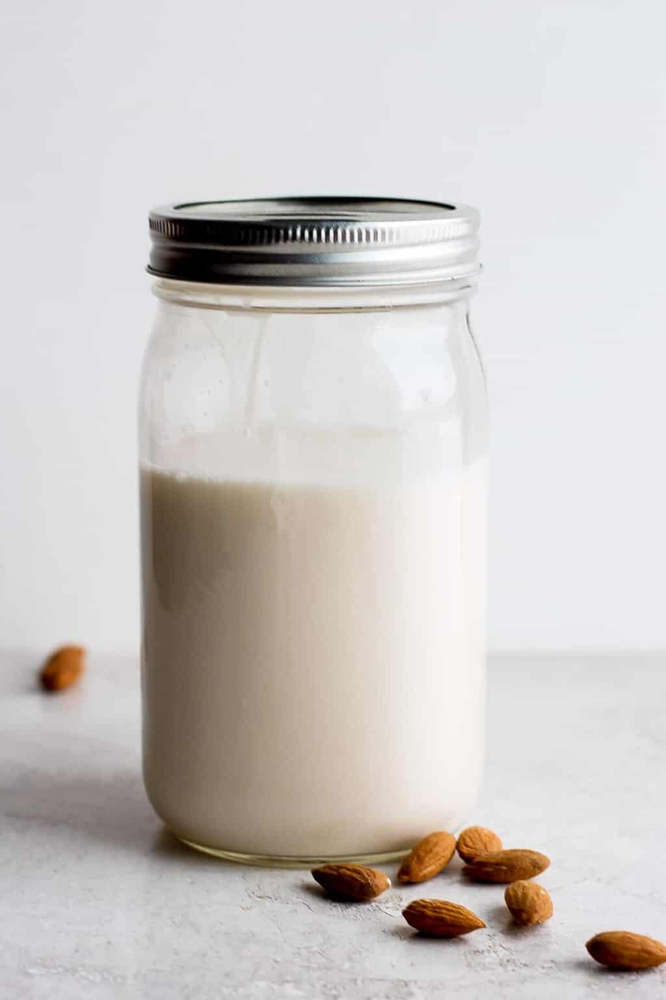

Recipe App
Home

BASE INGREDIENTS YOU NEED TO MAKE ALMOND MILK
HOW TO MAKE A BASIC Almond MILK
- Gather all ingredients.
-
Combine raw almonds with enough water to cover the almonds by at least
three inches.
- Let stand overnight.
-
The next day, strain the almonds and discard the soaking water. Then
transfer to a high-speed blender with the 4 cups of filtered water and
a pinch of salt.
-
Blend until smooth and well blended, about 1 minute. Be careful not to
run the blender or food processor too long as this will heat the milk.
-
If more blending is required, stop, wait, for milk to cool, and then
blend again.
-
Strain the milk through a nut milk bag, paper coffee filter, or a
clean and thin dish towel.
-
Pour the almond milk into a bottle, seal, and place in the coldest
place in your refrigerator for up to 7 days.